Polar and Spherical Coordinates¶
Polar coordinates (radial, azimuth)  are defined by
are defined by
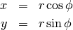
Spherical coordinates (radial, zenith, azimuth) 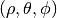:
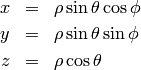
Note: this meaning of 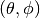 is mostly used in the USA and in many books. In Europe people usually use different symbols, like 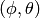, 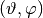 and others.
Argument function, atan2¶
Argument function 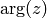 is any 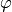 such that
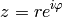
Obviously is unique up to any integer multiple of 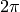. By taking
the principal value of the function, e.g. fixing to the
interval 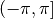 (so that the branch cut is on the negative  -axis, as
usual), we get the 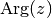 function:
-axis, as
usual), we get the 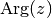 function:
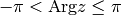
then 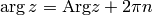, where 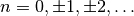. We can then
use the following formula to easily calculate 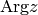 for any 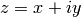 (except
 , i.e.
, i.e.  , where it is not defined):
, where it is not defined):
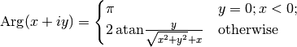
Finally we define 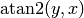 as:
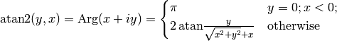
The angle 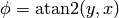 is the angle of the point  on the unit
circle (assuming the usual conventions), and it works for all quadrants
(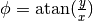 only works for the first and fourth quadrant, where
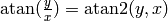, but in the second and third qudrant,
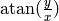 gives the wrong angles, while gives the
correct angles). So in particular:
on the unit
circle (assuming the usual conventions), and it works for all quadrants
(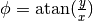 only works for the first and fourth quadrant, where
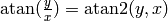, but in the second and third qudrant,
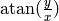 gives the wrong angles, while gives the
correct angles). So in particular:
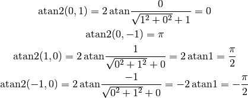
This convention () is used for example in Python, C or Fortran.
Some people might interchange with  in the definition (i.e. 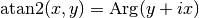), but it is not very common.
in the definition (i.e. 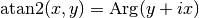), but it is not very common.
The following useful relations hold:
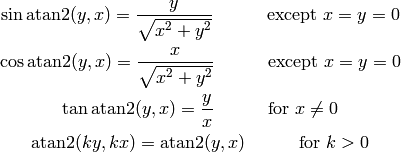
We now prove them. The following works for all  except for :
except for :
![\sin\atan2(y, x)
=\begin{cases}\sin\pi&y=0;x<0;\cr
\sin\left(2\,\atan{y\over\sqrt{x^2+y^2}+x}\right)
&\rm otherwise\cr\end{cases}
=
=\begin{cases}0&y=0;x<0;\cr
{y\over \sqrt{x^2+y^2}}&\rm otherwise\cr\end{cases}
=
=\begin{cases}{y\over \sqrt{x^2+y^2}}&y=0;x<0;\cr
{y\over \sqrt{x^2+y^2}}&\rm otherwise\cr\end{cases}
={y\over \sqrt{x^2+y^2}}
\cos\atan2(y, x)
=\begin{cases}\cos\pi&y=0;x<0;\cr
\cos\left(2\,\atan{y\over\sqrt{x^2+y^2}+x}\right)
&\rm otherwise\cr\end{cases}
=
=\begin{cases}-1&y=0;x<0;\cr
{x\over \sqrt{x^2+y^2}}&\rm otherwise\cr\end{cases}
=
=\begin{cases}{x\over \sqrt{x^2+y^2}}&y=0;x<0;\cr
{x\over \sqrt{x^2+y^2}}&\rm otherwise\cr\end{cases}
={x\over \sqrt{x^2+y^2}}](../../_images/math/708dc04823619641f1026d08832b162bad459691.png)
Tangent is infinite for 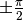, which corresponds to 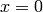, so the following works for all 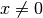:
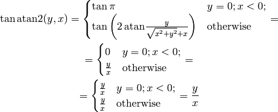
In the above, we used the following double angle formulas:
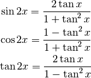
to simplify the following expressions:
![\sin\left(2\,\atan{y\over\sqrt{x^2+y^2}+x}\right) =
{2\tan\atan{y\over\sqrt{x^2+y^2}+x}\over1+\tan^2\atan{y\over\sqrt{x^2+y^2}+x}}
=
=
{2{y\over\sqrt{x^2+y^2}+x}\over1
+\left({y\over\sqrt{x^2+y^2}+x}\right)^2}
=
{2y\left(\sqrt{x^2+y^2}+x\right)\over
\left(\sqrt{x^2+y^2}+x\right)^2+y^2}
=
=
{y\left(\sqrt{x^2+y^2}+x\right)\over
x^2+y^2+x\sqrt{x^2+y^2}}
=
{y\left(\sqrt{x^2+y^2}+x\right)\over
\sqrt{x^2+y^2}\left(\sqrt{x^2+y^2}+x\right)}
=
=
{y\over\sqrt{x^2+y^2}}
\cos\left(2\,\atan{y\over\sqrt{x^2+y^2}+x}\right) =
{1-\tan^2\atan{y\over\sqrt{x^2+y^2}+x}\over1+\tan^2\atan{y\over\sqrt{x^2+y^2}+x}}
=
=
{1 -\left({y\over\sqrt{x^2+y^2}+x}\right)^2\over
1 +\left({y\over\sqrt{x^2+y^2}+x}\right)^2}
=
{\left(\sqrt{x^2+y^2}+x\right)^2-y^2\over
\left(\sqrt{x^2+y^2}+x\right)^2+y^2}
=
=
{x\left(\sqrt{x^2+y^2}+x\right)\over
x^2+y^2+x\sqrt{x^2+y^2}}
=
{x\left(\sqrt{x^2+y^2}+x\right)\over
\sqrt{x^2+y^2}\left(\sqrt{x^2+y^2}+x\right)}
=
=
{x\over\sqrt{x^2+y^2}}
\tan\left(2\,\atan{y\over\sqrt{x^2+y^2}+x}\right) =
{2\tan\atan{y\over\sqrt{x^2+y^2}+x}\over1-\tan^2\atan{y\over\sqrt{x^2+y^2}+x}}
=
=
{2{y\over\sqrt{x^2+y^2}+x}\over1
-\left({y\over\sqrt{x^2+y^2}+x}\right)^2}
=
{2y\left(\sqrt{x^2+y^2}+x\right)\over
\left(\sqrt{x^2+y^2}+x\right)^2-y^2}
=
=
{y\left(\sqrt{x^2+y^2}+x\right)\over
x\left(\sqrt{x^2+y^2}+x\right)}
= {y\over x}](../../_images/math/58f593e12cc1ff077f482fd844e71589f891d1b0.png)
Finally, for all 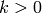 we get:
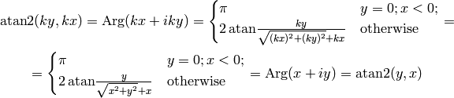
An example of an application:
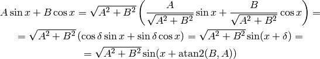
where

Multiple Argument Formulas¶
sin(a x)¶
Systematic way to derive all multiple argument formulas is to use the following relation:
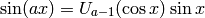
where  are the Chebyshev polynomials of the second kind, first few are:
are the Chebyshev polynomials of the second kind, first few are:

Code:
>>> from sympy import chebyshevu, var
>>> var("x")
>>> for i in range(7): print "U_%d(x) = %s" % (i, chebyshevu(i, x))
U_0(x) = 1
U_1(x) = 2*x
U_2(x) = -1 + 4*x**2
U_3(x) = -4*x + 8*x**3
U_4(x) = 1 - 12*x**2 + 16*x**4
U_5(x) = 6*x - 32*x**3 + 32*x**5
U_6(x) = -1 + 24*x**2 - 80*x**4 + 64*x**6
One can then use this to calculate:
![\sin (-2x) = U_{-3}(\cos x) \sin x = -2\cos x\sin x
\sin (-x) = U_{-2}(\cos x) \sin x = -\sin x
\sin 0 = U_{-1}(\cos x) \sin x = 0
\sin {x\over 2} = U_{-{1\over2}}(\cos x) \sin x =
{\sin x\over\sqrt 2\sqrt{\cos x + 1}} =
{\sqrt{1-\cos^2x}\over\sqrt 2\sqrt{\cos x + 1}} =
{\sqrt{1-\cos x}\over\sqrt 2}
\sin x = U_0(\cos x) \sin x = \sin x
\sin {3x\over 2} = U_{1\over2}(\cos x) \sin x =
{(2\cos x+1)\sin x\over\sqrt 2\sqrt{\cos x + 1}} =
{(2\cos x+1)\sqrt{1-\cos^2x}\over\sqrt 2\sqrt{\cos x + 1}} =
{(2\cos x+1)\sqrt{1-\cos x}\over\sqrt 2}
\sin 2x = U_1(\cos x) \sin x = 2\cos x\sin x
\sin 3x = U_2(\cos x) \sin x = (4\cos^2 x-1)\sin x](../../_images/math/88577ff606fe56a8a10403507303a5fc7d1a706d.png)
Code:
>>> from sympy import chebyshevu, var, sin, cos
>>> var("x")
>>> for n in range(1, 7): print "sin(%d*x) = %s" % (n, chebyshevu(n-1, cos(x))*sin(x))
sin(1*x) = sin(x)
sin(2*x) = 2*cos(x)*sin(x)
sin(3*x) = -(1 - 4*cos(x)**2)*sin(x)
sin(4*x) = (-4*cos(x) + 8*cos(x)**3)*sin(x)
sin(5*x) = (1 - 12*cos(x)**2 + 16*cos(x)**4)*sin(x)
sin(6*x) = (6*cos(x) - 32*cos(x)**3 + 32*cos(x)**5)*sin(x)
cos(a x)¶
Similarly as above, we use:
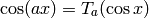
where 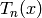 are the Chebyshev polynomials of the first kind, first few are:
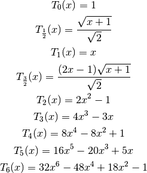
Code:
>>> from sympy import chebyshevt, var
>>> var("x")
>>> for i in range(7): print "T_%d(x) = %s" % (i, chebyshevt(i, x))
T_0(x) = 1
T_1(x) = x
T_2(x) = -1 + 2*x**2
T_3(x) = -3*x + 4*x**3
T_4(x) = 1 - 8*x**2 + 8*x**4
T_5(x) = 5*x - 20*x**3 + 16*x**5
T_6(x) = -1 + 18*x**2 - 48*x**4 + 32*x**6
One can then use this to calculate:
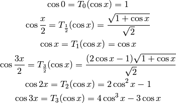
Code:
>>> from sympy import chebyshevt, var, cos
>>> var("x")
>>> for n in range(7): print "cos(%d*x) = %s" % (n, chebyshevt(n, cos(x)))
cos(0*x) = 1
cos(1*x) = cos(x)
cos(2*x) = -1 + 2*cos(x)**2
cos(3*x) = -3*cos(x) + 4*cos(x)**3
cos(4*x) = 1 - 8*cos(x)**2 + 8*cos(x)**4
cos(5*x) = 5*cos(x) - 20*cos(x)**3 + 16*cos(x)**5
cos(6*x) = -1 + 18*cos(x)**2 - 48*cos(x)**4 + 32*cos(x)**6